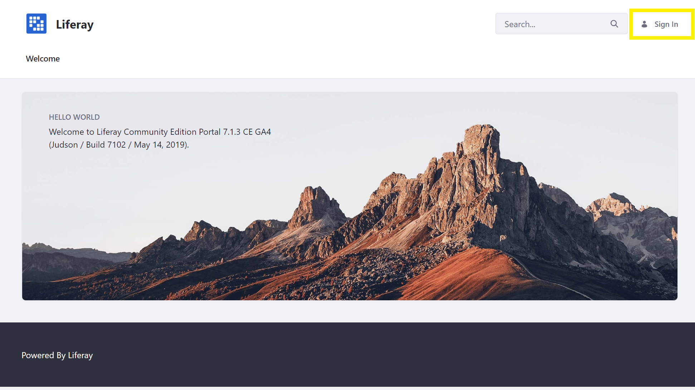
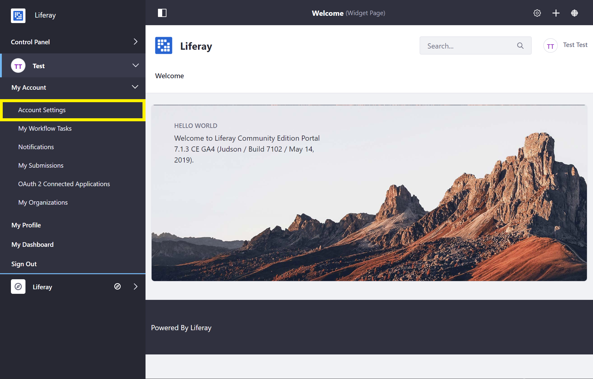
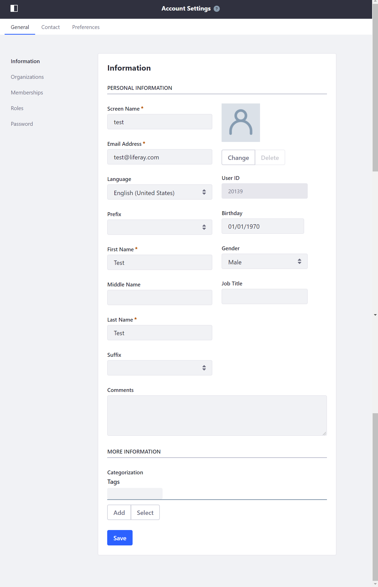
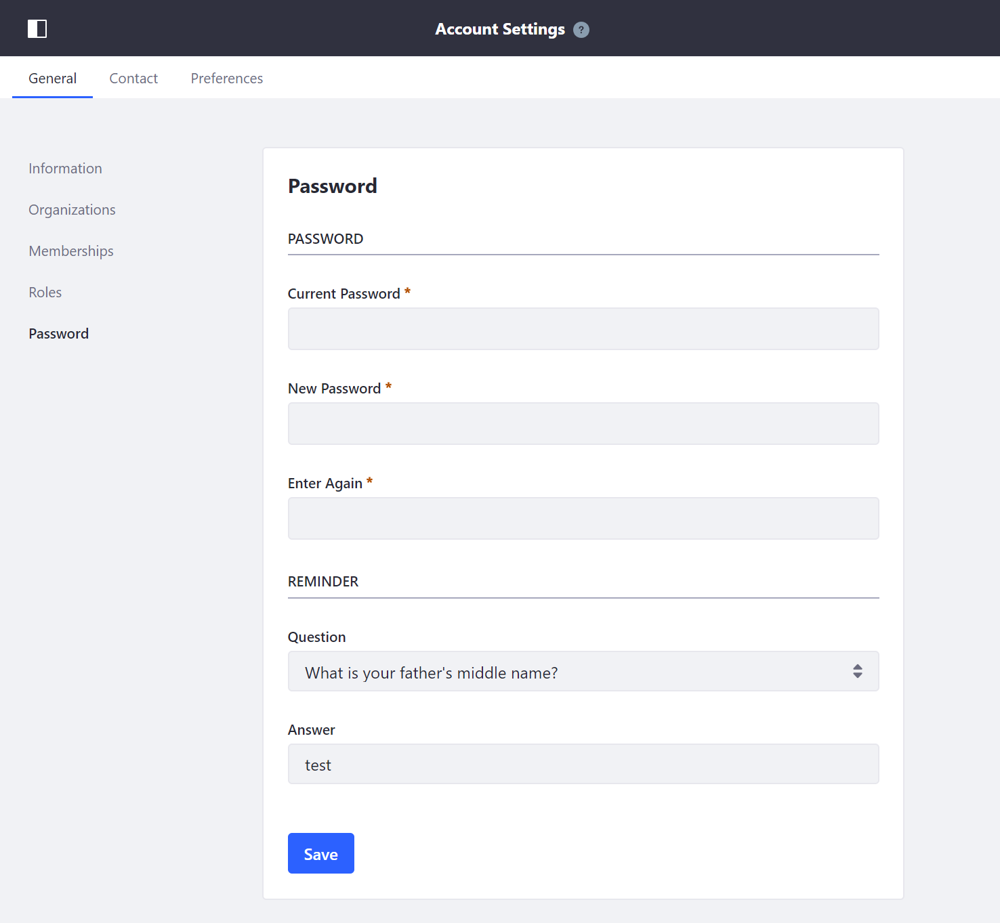
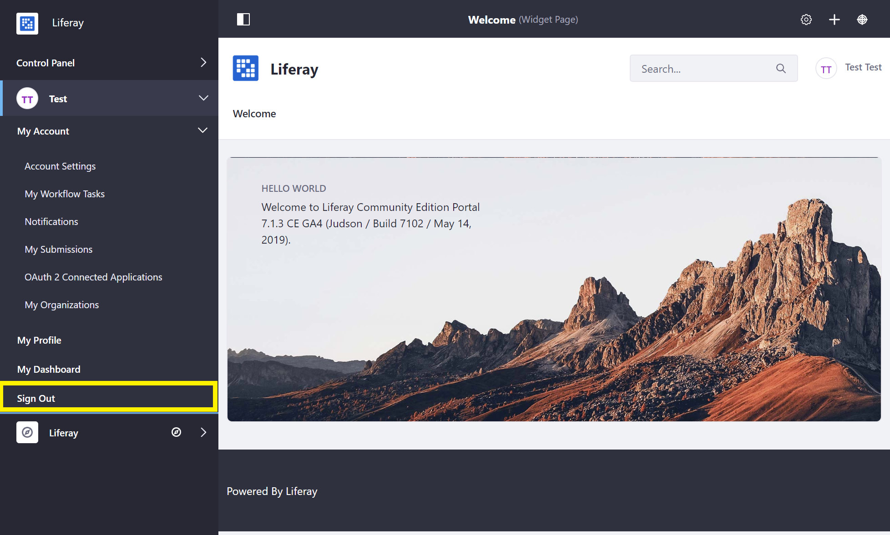

Introduction to the Admin Account¶
The Admin user is created by default in any new installation of Liferay Commerce and has full permissions to modify every facet of a Liferay Commerce instance. The Admin user can create, modify, and delete sites, pages, users, accounts, catalogs and products, and perform all store and site administrative tasks.
Accessing Liferay Commerce as the Admin User¶
Open a browser to
http://localhost:8080.Click the Sign In link.

If a Liferay Commerce Bundle is being used, you will be presented with the Setup Wizard. Follow the on-screen instructions to configure your Admin user.
Enter the default admin credentials to log in.
It is highly recommended that the default login credentials be updated when starting a new Liferay Commerce installation.
Configuring the Admin User¶
Changing Account Information¶
Open the Product Menu and navigate to the Account Menu -> My Account -> Account Settings.

In the Information tab, change or add user information as needed.

Changing the Login Password¶
Open the Product Menu and navigate to the Account Menu -> My Account -> Account Settings -> Password.
Enter your Current Password and provide a New Password.

Note: This screen is where the Password Reminder Question may also be updated.
Signing Out¶
To log out of your account:
Open the Product Menu and navigate to the Account Menu -> Sign Out.
